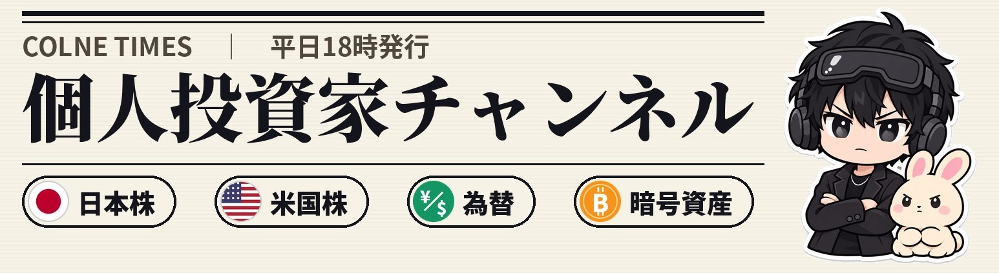
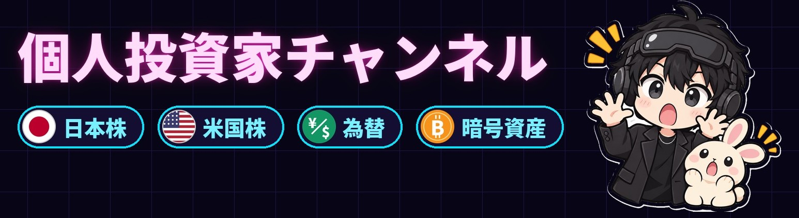
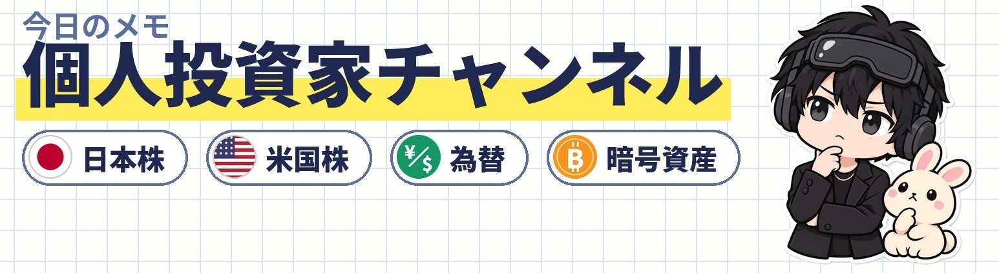
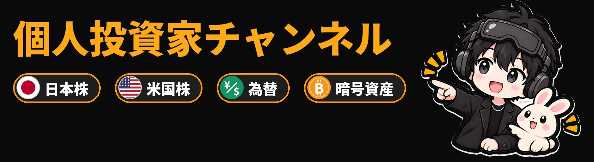
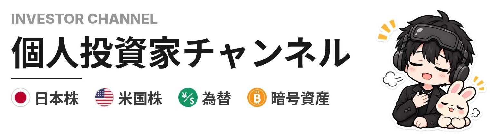
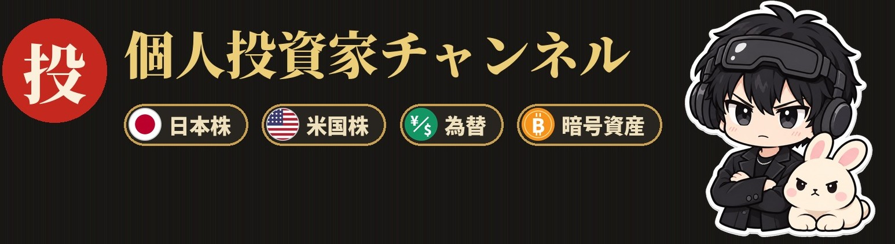
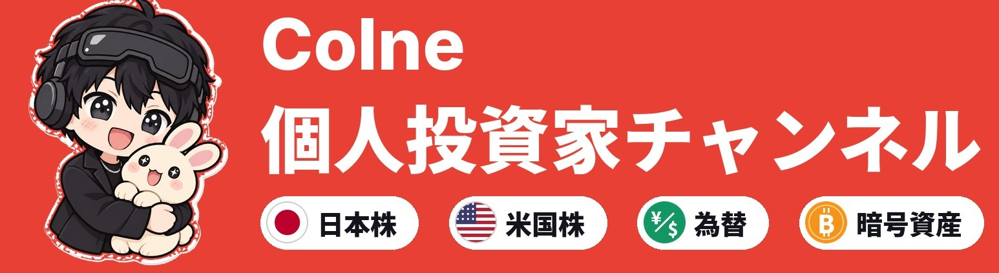
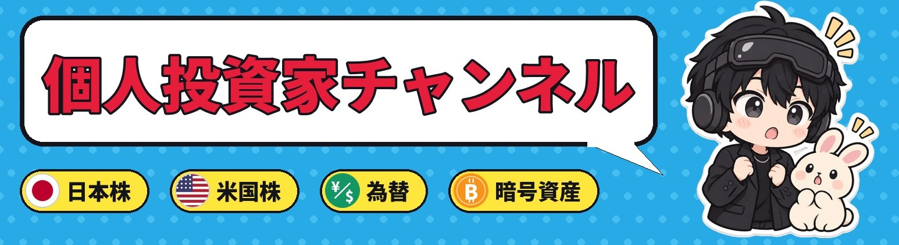
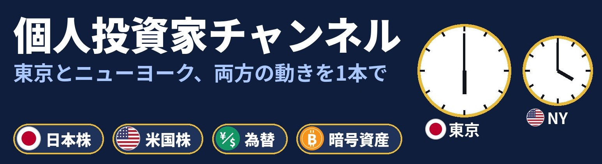
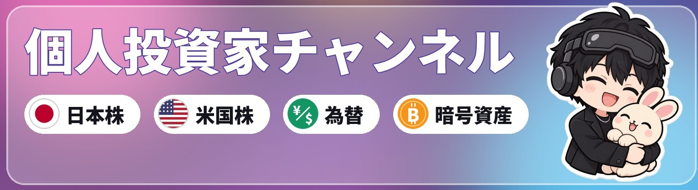

前回の10案（v4）と同じく、11/19 のご意見（「個人投資家チャンネル」を太字で大きく・日本株・米国株・為替・暗号資産をイラスト付きで・「事実だけ」は出さない）を守り、作風だけを10通りに変えました。チャンネル説明の10案は v4 のページにあります。

スマホでも見える範囲 ／ 実画像（2560×1440） ／ 見える範囲の確認 ／ スマホでの見え方
作風：題字・二重の罫線・明朝。「毎日の紙面」の安心感

スマホでも見える範囲 ／ 実画像（2560×1440） ／ 見える範囲の確認 ／ スマホでの見え方
作風：暗いグリッドに光る文字。夜に見る人向けの強い目立ち

スマホでも見える範囲 ／ 実画像（2560×1440） ／ 見える範囲の確認 ／ スマホでの見え方
作風：手書きのメモの親しみ。ご意見の「やさしめ」寄り

スマホでも見える範囲 ／ 実画像（2560×1440） ／ 見える範囲の確認 ／ スマホでの見え方
作風：証券会社の株価ボードの雰囲気。オレンジの文字

スマホでも見える範囲 ／ 実画像（2560×1440） ／ 見える範囲の確認 ／ スマホでの見え方
作風：大きな余白・細い線・英字の小見出し。上品さ

スマホでも見える範囲 ／ 実画像（2560×1440） ／ 見える範囲の確認 ／ スマホでの見え方
作風：墨の地に朱の印と金の文字

スマホでも見える範囲 ／ 実画像（2560×1440） ／ 見える範囲の確認 ／ スマホでの見え方
作風：赤地に大きなキャラと Colne の名前

スマホでも見える範囲 ／ 実画像（2560×1440） ／ 見える範囲の確認 ／ スマホでの見え方
作風：網点と吹き出し。いちばん元気な案

スマホでも見える範囲 ／ 実画像（2560×1440） ／ 見える範囲の確認 ／ スマホでの見え方
作風：18時（東京）＝4時（NY）。両方の株を扱うことを絵で伝える

スマホでも見える範囲 ／ 実画像（2560×1440） ／ 見える範囲の確認 ／ スマホでの見え方
作風：色のにじむ背景に半透明のカード